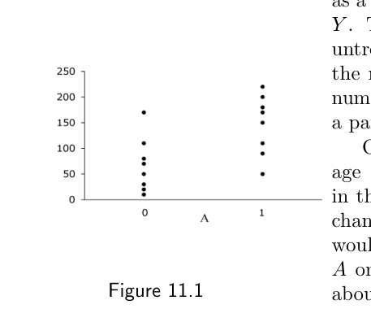
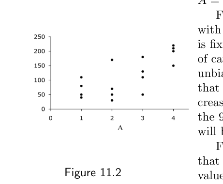
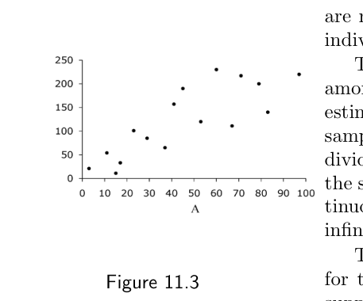
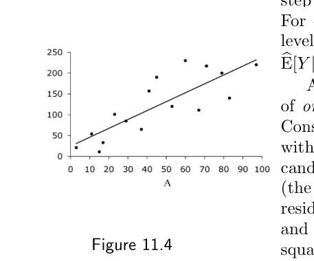
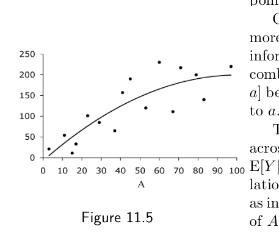

第二部分 · 基于模型的因果推断 · Part II — Causal inference with models
第 11 章 · 为什么需要模型
Hernán MA, Robins JM（2020）. Causal Inference: What If. Chapter 11. 本页为中文全文翻译，附译注。
别担心，不会再有关于“你抬头会不会让别人也跟着抬头”的章首故事了。那个例子我们已经榨得比看上去可能的还要彻底。本书第二部分的多数例子都会用到真实数据，数据集可以从本书网站下载。 第一部分基本停留在概念层面，计算被压到最少，用手算就能完成。相比之下，第二部分的材料要求动用计算机去拟合回归模型，比如线性模型和 logistic 模型。由于本书不可能对回归技术做一次系统的入门介绍，我们假定读者对这些常用模型已有基本理解和实际使用经验。本书网站提供了 R、SAS、Stata 和 Python 的代码链接，可以复现正文中描述的分析；凡涉及具体代码段的地方，正文边注都会指明是哪个程序。
本章说明第一部分所用的非参数估计量与第二部分所用的参数（基于模型的）估计量之间的差别。我们还会回顾平滑这个概念，并简要讨论任何建模决策都牵涉其中的偏差-方差权衡。本章想说明的是：无论分析目标是因果推断，还是姑且说预测，数据分析都需要模型。在下一章之前，我们先把因果的讨论搁在一边。请记住，关于建模的统计文献浩如烟海，本章只能挑出其中几个关键问题。
11.1 数据不会自己说话
设想一个由 16 名人类免疫缺陷病毒（HIV）感染者组成的研究人群。与本书第一部分不同，我们不再把这 16 个人看作各自代表 10 亿个跟他们完全相同的人。他们只是从一个庞大的、也许纯属假设的超级总体（super-population）中随机抽取的 16 个人，而这个超级总体就是目标人群。
边注 一致性估计量（consistent estimator）的严格定义见第 10 章。
研究开始时，每个人接受一定水平的处理 A（抗逆转录病毒治疗），并在研究全程维持该水平。研究结束时，对所有人测量一个连续结局 Y（CD4 细胞计数，单位为 cells/mm3）。我们希望一致地估计出这 16 人所属人群中、处理水平为 A = a 的个体的 Y 均值。也就是说，估计量（estimand）是未知的总体参数 E[Y|A = a]。
按第 10 章的定义，E[Y|A = a] 的估计量 E[Ŷ|A = a] 是数据的某个函数，用来估计这个未知的总体参数。通俗地说，E[Ŷ|A = a] 是一致估计量，意思就是“样本量越大，估计值就越接近总体值 E[Y|A = a]”。E[Ŷ|A = a] 的两个可能例子是：(i) 接受 A = a 的那些人的 Y 样本均值；(ii) 数据集中第一个恰好取 A = a 的观测值。接受 A = a 者的 Y 样本均值是总体均值的一致估计量；第一个取 A = a 的观测值则不是。实践中我们要求所有估计量都一致，所以用样本均值去估计总体均值。
假设处理 A 是一个二值变量，有两个可能取值：不治疗（A = 0）与治疗（A = 1）。有一半的人接受了治疗（A = 1）。图 11.1 是一幅散点图，把 16 个人各画成一个点，点的纵坐标表示该个体的结局值 Y。8 个接受治疗的人排在 A = 1 这一列，8 个未接受治疗的人排在 A = 0 这一列。按第 10 章的定义，对人群中处理水平 A = a 个体的 Y 均值的估计，就是把估计量（在我们的例子里是样本均值）应用到某个具体数据集上得到的数值结果。

A（0 = 未治疗，1 = 治疗），纵轴为结局 Y（CD4 细胞计数）。每列 8 个点。我们对接受治疗者总体均值的估计，是 A = 1 那一列的样本均值 146.25；对未接受治疗者的估计，是 A = 0 那一列的样本均值 67.50。若接受治疗者与未接受治疗者可交换（exchangeability），差值 146.25 − 67.50 就可以解释为处理 A 对结局 Y 在目标人群中平均因果效应的一个估计。不过，本章要谈的并不是做因果推断。我们当前的目标只是说明：当我们要估计 E[Y|A = a] 这类总体量时，为什么需要模型——不管这些估计最终有没有因果解释。
现在假设处理 A 是一个多值变量，可以取 4 个值：不治疗（A = 1）、低剂量（A = 2）、中剂量（A = 3）、高剂量（A = 4）。每个处理水平上各有四分之一的人。图 11.2 展示了这 16 人的结局取值。要估计这 4 个处理组中的总体均值，我们只需算出相应的样本均值。对 A = 1、A = 2、A = 3、A = 4，估计值依次是 70.0、80.0、117.5 和 195.0。

A 改为取 4 个水平（1 = 不治疗，2 = 低剂量，3 = 中剂量，4 = 高剂量）时的结局散点图，每水平 4 人。图 11.1 与图 11.2 描绘的，分别是取 2 个类别和取 4 个类别的离散（分类）变量。由于研究人数固定为 16，类别数越多，每个类别里的人就越少。每一类里的样本均值仍然是相应总体均值的一个严格无偏估计量，但随着每类人数减少，样本均值恰好接近相应总体均值的概率会下降。各类别均值 95% 置信区间（见第 10 章）的长度，在图 11.2 的数据上会比图 11.1 的更长。
最后，假设 A 表示以 mg/天计的治疗剂量，取值是 0 到 100 之间的整数。图 11.3 展示了 16 个人各自的结局取值。由于处理的可能取值数远多于研究人数，有很多 A 的取值没有任何人接受过。比如，研究人群里就没有剂量 A = 90 的个体。

A 为 0–100 mg/天整数剂量时的结局散点图。注意没有点在 A = 90 处——研究里没人接受这个剂量。这就产生了一个问题：目标人群中处理水平 A = 90 的个体，其结局 Y 的均值该怎么估计？我们在图 11.1 与图 11.2 中使用的估计量——按处理水平分组的样本均值——在图 11.3 里那些没有任何个体的处理水平上是未定义的。如果处理 A 真的是一个连续变量，那么样本均值对几乎所有处理水平都将无法定义。（一个连续的 A 可以看成是拥有不可数无穷多个类别的分类变量。）
上面这一串描述说明：我们不可能总是让数据“自己说话”，从而得到有意义的估计。更多时候，我们需要用一个模型来补充数据，下一节就来说这件事。
11.2 条件均值的参数估计量
我们想从图 11.3 的数据里估计处理水平 A = 90 个体的 Y 均值，也就是 E[Y|A = 90]。假设我们预期 A = 90 个体的 Y 均值落在 A = 80 与 A = 100 两个均值之间。事实上，假设我们知道：在整个 A 取值范围内，处理水平特异的 Y 总体均值是 A 的一个线性函数。更精确地说，我们知道 Y 的均值 E[Y|A] 在 A = 0 处取某个值 θ0，随后 A 每增加一个单位，均值增加（或减少）θ1 个单位。或者更紧凑地写：
E[Y|A] = θ0 + θ1A
边注 更一般地说，对两者关系形状的这种限制被称为函数形式（functional form），有些作者称之为剂量-反应曲线（dose-response curve）。我们不用后一个说法，因为它暗示着处理的剂量对反应有因果效应，而在存在混杂的情况下这完全可能是假的。
这个等式是对条件均值函数 E[Y|A] 形状的一个限制。这类特定限制称为线性均值模型（linear mean model），而 θ0 与 θ1 称为该模型的参数（parameters）。凡是用有限多个参数来描述条件均值函数的模型，都称为参数条件均值模型（parametric conditional mean models）。在我们的例子里，参数 θ0 与 θ1 定义了一条直线，它在纵轴上的截距是 θ0，斜率是 θ1。也就是说，这个模型规定所有条件均值函数都是直线，只不过截距和斜率可以各不相同。
现在，我们可以把图 11.3 的数据与这个参数均值模型结合起来，为 0 到 100 之间的所有取值 a 估计 E[Y|A = a] 了。第一步是得到参数 θ0 和 θ1 的估计 θ̂0 与 θ̂1。第二步是用这些估计去估计任意 A = a 处的 Y 均值。例如，要估计处理水平 A = 90 个体的 Y 均值，我们用 E[Ŷ|A = 90] = θ̂0 + 90θ̂1。为每个个体算出的 E[Ŷ|A]，称为该个体的预测值（predicted value）。
θ0 和 θ1 的一个严格无偏估计量可以用普通最小二乘法得到。下面给出一个非技术性的说明。把图 11.3 里所有可能的候选直线都想一遍，每条直线对应一组不同的截距 θ0 与斜率 θ1。对每条候选线，可以计算每个点到它的垂直距离（即残差，residual），把这 16 个残差各自平方，再把 16 个平方残差加起来。使这个和最小的直线就是“最小二乘”线，这条线的参数值 θ̂0 与 θ̂1 就是“最小二乘”估计。θ̂0 与 θ̂1 的取值可以用线性代数轻松算出，任何一本统计教材都会讲。

E[Y|A] = θ0 + θ1A：最小二乘直线拟合结果。边注 代码：Program 11.2。在残差方差不依赖于 A（同方差性，homoscedasticity）的假设下，θ0 的 Wald 95% 置信区间为 (−21.2, 70.3)，θ1 的为 (1.28, 2.99)，E[Y|A = 90] 的为 (172.1, 261.6)。
在我们的例子里，参数估计是 θ̂0 = 24.55 与 θ̂1 = 2.14，它们定义了图 11.4 中那条直线。因此，处理水平 A = 90 个体的 Y 预测均值是 E[Ŷ|A = 90] = 24.55 + 90 × 2.14 = 216.9。由于普通最小二乘估计用上了所有数据点来寻找最佳直线，A = a 组中 Y 的均值 E[Y|A = a]，是靠借用那些处理值 A 不等于 a 的个体的信息来估计的。
那么，什么叫模型？模型由对数据联合分布的事前限制来定义。我们的线性条件均值模型说，条件均值函数 E[Y|A] 是一条直线，这就限制了它的形状。比如，这个模型把 A = 90 处的 Y 均值限制在 A = 80 与 A = 100 两处均值之间。这一限制由参数 θ0 和 θ1 编码进来。也就是说，参数条件均值模型通过它的事前限制，为数据中不足的信息补充了一些外部信息。
参数估计量——即以参数条件均值模型为基础的估计量——让我们能够估计那些原本无从估计的量，比如目标人群中处理水平 A = 90 个体的 Y 均值，尽管研究人群里一个这样的人也没有。但天下没有免费的午餐。使用参数模型时，只有当模型编码的那些限制是对的、也就是说模型被正确设定（correctly specified）时，推论才是正确的。因此，本书余下很大一部分篇幅所讨论的、基于模型的因果推断，都依赖于（近似）无模型误设这一条件。既然参数模型几乎从来不可能被完全设定，某种程度的模型误设几乎总是预期之中的。用非参数估计量可以在一定程度上弥补这一点，这正是下一节的内容。
11.3 条件均值的非参数估计量
回到图 11.1 的数据。处理 A 是二值的，我们想一致地估计接受治疗者 E[Y|A = 1] 与未接受治疗者 E[Y|A = 0] 的 Y 均值。假设我们已经如此沉迷于模型，以至于决定用模型来估计这两个量。我们再次提出线性模型
E[Y|A] = θ0 + θ1A
其中 E[Y|A = 0] = θ0 + 0 × θ1 = θ0，E[Y|A = 1] = θ0 + 1 × θ1 = θ0 + θ1。我们用最小二乘法得到参数估计 θ̂0 = 67.5 与 θ̂1 = 78.75。于是 E[Ŷ|A = 0] = 67.5，E[Ŷ|A = 1] = 146.25。请注意，我们基于模型得到的 Y 均值估计，与 11.1 节算出的样本均值一模一样。这不是巧合，而是意料之中的结果。
边注 代码：Program 11.2。在本书中，我们把“模型”定义为对自然可能状态的事前数学限制（Robins, Greenland 1986）。第一部分之所以取名“无模型的因果推断”，正是因为它只描述了饱和模型。
我们再回头审视一遍处理 A 为二值时的模型 E[Y|A] = θ0 + θ1A。把它改写成 E[Y|A = 1] = E[Y|A = 0] + θ1，就能看出这个模型不过是说：接受治疗者的均值 E[Y|A = 1] 等于未接受治疗者的均值 E[Y|A = 0] 加上某个量 θ1，而 θ1 可正可负可为零。可这句话当然永远成立！于是，对 E[Y|A = 1] 和 E[Y|A = 0] 的取值，这个模型没有施加任何限制。也就是说，当处理 A 为二值时，E[Y|A = a] = θ0 + θ1A 根本算不上模型，因为它和样本均值一样，还是让数据自己说话。凡是不对数据分布施加限制的“模型”，都称为饱和模型（saturated models）。它们形式上像个模型，即便并不符合我们对模型的定义，人们通常还是把它们称作模型。
一般地说，当一个条件均值模型里的参数个数，等于总体中未知条件均值的个数时，这个模型就是饱和的。例如，线性模型 E[Y|A] = θ0 + θ1A 有两个参数，而当 A 为二值时总体中恰好有两个未知的条件均值：E[Y|A = 1] 与 E[Y|A = 0]。既然两个参数的取值没有被模型限制，两个均值的取值自然也没有被限制。
边注 饱和模型的特点是：等号两边的未知数个数相同。
作为对照，看图 11.3 的数据，A 可以取 0 到 100 之间的值。线性模型 E[Y|A] = θ0 + θ1A 只有两个参数，却要估计 101 个量，也就是 E[Y|A = 0]、E[Y|A = 1]、…、E[Y|A = 100]。用两个参数去无偏地估计 101 个量，唯一的指望就是运气好到让这 101 个均值恰好都落在一条直线上。当一个模型只有少数几个参数、却被用来估计很多总体量时，我们说这个模型是简约的（parsimonious）。
这里我们把条件均值函数的非参数估计量定义为：那些在没有任何事前限制的条件下、仅从数据产生估计的估计量（更严格的定义见精细辨析 11.1）。对二值处理，总体均值 E[Y|A = a] 的一个非参数估计量就是它的经验版本，即样本均值，等价地说，就是本节描述的那个饱和模型。当 A 是取值 100 级的离散变量而样本里没有人 A = 90 时，E[Y|A = 90] 的非参数估计量并不存在。本书第一部分介绍的所有因果推断方法——标准化、IP 加权、分层、匹配——都以饱和模型下总体量的非参数估计量为基础，因为它们对效应估计的取值没有施加任何事前限制。相比之下，本书第二部分介绍的大多数因果推断方法，依赖的都是数据分布某一部分的参数估计量。参数估计正是在数据无法自己说话时用来借用信息的一种手段。
边注 可识别性假设（identifiability assumptions）是：即便拥有无穷多的数据，为了算出这个参数也必须做出的假设。建模假设（modeling assumptions）是：由于我们没有无穷多的数据，为了估计这个参数而额外做出的假设。形式化地说，可识别性假设使参数成为观测数据联合分布的一个唯一函数。
11.4 平滑
再来看图 11.3 的数据和线性模型 E[Y|A] = θ0 + θ1A。参数 θ1 是处理剂量 A 每增加一个单位、Y 的均值差多少。因为 θ1 只是一个数，模型就规定：A 每增加一个单位、Y 的均值差在整个 A 取值范围内必须保持恒定，也就是说，模型要求条件均值结局作为处理剂量 A 的函数沿着一条直线走。图 11.4 画出了最佳拟合的那条直线。
但完全可以设想这样的情形：在低剂量处，A 每增加一个单位带来的均值差较大；在高剂量处，同样的增量带来的均值差较小。如果剂量一旦超过某个水平，继续加量产生的效果就越来越小，那么就会出现这种情况。在这种情形下，模型 E[Y|A] = θ0 + θ1A 就是错的。不过，线性模型可以做得更灵活。
比方说，我们对图 11.3 的数据拟合模型 E[Y|A] = θ0 + θ1A + θ2A2，其中 A2 = A × A 就是 A 的平方。它仍然被称为线性模型，因为条件均值被表达成一个线性组合，即各协变量（A 与 A2）与其对应系数（参数 θ1 与 θ2）之积的和，再加上一个截距（θ0）。然而，只要 θ2 不为零，(θ0, θ1, θ2) 定义出来的就是一条曲线——一条抛物线——而不是直线。我们把 θ1 称为线性项 A 的参数，把 θ2 称为二次项 A2 的参数。
边注 小心：“线性”一词常有两种含义。当一个模型被表示成参数与变量函数的线性组合时，它就是线性的，即便这些函数本身是变量的非线性函数（比如协变量的高次幂或对数）。
把这个三参数线性模型 E[Y|A] = θ0 + θ1A + θ2A2 的曲线找出来，只需对图 11.3 的数据做普通最小二乘估计。估计出的曲线见图 11.5。参数估计为 θ̂0 = −7.41、θ̂1 = 4.11、θ̂2 = −0.02。处理水平 A = 90 个体的 Y 预测均值，由 E[Ŷ|A = 90] = θ̂0 + 90θ̂1 + 90 × 90θ̂2 = 197.1 得到。
边注 代码：Program 11.3。在同方差性假设下，E[Ŷ|A = 90] 的 Wald 95% 置信区间为 (142.8, 251.5)。

E[Y|A] = θ0 + θ1A + θ2A2 在图 11.3 数据上的拟合曲线。与图 11.4 的直线相比，曲线在高剂量段已明显趋于平缓。我们可以继续加参数：为三次项加 θ3A3，为四次项加 θ4A4，一直加到十五次项 θ15A15。到那时，模型里的参数个数就等于数据点（个体）个数了。曲线形状会随着参数个数的增加而改变。一般来说，模型里的参数越多，出现的拐点就越多。
也就是说，曲线通常会随着参数个数的增加而变得更“wiggly”（起伏不平），更不平滑。一个只有 2 个参数的线性模型——一条直线——是最平滑的模型。一个参数个数与数据点一样多的模型则最不平滑，因为它能有的拐点数和数据点数一样多。事实上，这样的模型会插值数据，也就是样本中的每个数据点都恰好落在估计出的条件均值函数上。
建模往往可以被看作这样一个过程：把嘈杂的数据转换成或多或少平滑的曲线。之所以会发生平滑，是因为模型要借用许多数据点的信息，去预测协变量取某一特定组合时的结局取值。而平滑来自于：E[Y|A = a] 是靠借用 A 不等于 a 的个体的信息来估计的。所有参数估计量都包含某种程度的平滑。
平滑的程度取决于在个体之间借用了多少信息。两参数模型 E[Y|A] = θ0 + θ1A 估计 E[Y|A = 90] 时，用的是研究人群里所有人的信息去找那条最小二乘直线。而一个参数个数与个体数相同的模型，在估计数据中出现过的那些 A 取值处的 E[Y|A] 时，不借用任何信息；不过对数据中没出现过的 A 取值，它仍然会借用信息（通过插值）。
用介于其间的参数个数，或者更一般地通过限制参与估计的个体个数，可以得到中间程度的平滑。例如，为估计 E[Y|A = 90]，我们可以只对剂量在 80 到 100 之间的个体拟合两参数模型 E[Y|A] = θ0 + θ1A。也就是说，我们只从 A = 90 附近一个 10 单位宽的窗口里借用信息。A = 90 周围的窗口越宽，达到的平滑就越多。
边注 我们用针对连续结局的模型作例子。相同的推理也适用于针对二值结局的模型，比如 logistic 模型（见技术要点 11.1）。
在上面这些过于简化的例子里，所有模型都只含一个协变量（要么 A 一个参数，要么 A 与 A2 两个参数），所以曲线可以画在二维的书页上。在实际应用中，模型往往包含许多不同的协变量，所谓的曲线其实是超维曲面。无论问题的维数是多少，平滑这个概念都不变：模型里的参数越少，预测（反应）曲面就越平滑。
11.5 偏差-方差权衡
在前几节里，我们用图 11.3 的 16 个人去估计目标人群中接受 A = 90 剂量的个体的结局均值 E[Y|A = 90]。由于研究人群里没人接受 A = 90，我们没法让数据自己说话，于是把数据与一个线性模型结合起来。估计值 E[Ŷ|A = 90] 会随模型而变：在两参数模型 E[Y|A] = θ0 + θ1A 下，估计是 216.9（95% 置信区间：172.1, 261.6）；在三参数模型 E[Y|A] = θ0 + θ1A + θ2A2 下，估计是 197.1（95% 置信区间：142.8, 251.5）。我们用了两个不同的参数模型，得到两个不同的估计。哪个更好？216.9 还是 197.1 更接近目标人群里的真值？
如果两者之间的关系真的是曲线形的，那么两参数模型的估计会有偏，因为它假定的是一条直线。反过来，如果关系真的就是一条直线，那么两个模型的估计都是有效的。原因在于：三参数模型 E[Y|A] = θ0 + θ1A + θ2A2 在直线情形下（此时 θ2 = 0）和抛物线情形下（此时 θ2 ≠ 0）都被正确设定。有一个保险的做法：宁可用三参数模型 E[Y|A] = θ0 + θ1A + θ2A2，而不用两参数模型 E[Y|A] = θ0 + θ1A。因为三参数模型在直线和抛物线两种情形下都被正确设定，它产生偏差的可能性更小。一般来讲，模型里的参数越多，模型施加的限制就越少；模型越不平滑，它对模型误设所致偏差的抵抗力就越强。
不过，越不平滑的模型虽然可能给出偏差更小的估计，方差也会更大，也就是估计值周围的 95% 置信区间更宽。举例来说，用三参数模型时，E[Ŷ|A = 90] 周围的 95% 置信区间就比用两参数模型时宽得多。然而，一旦基于两参数模型的 E[Ŷ|A = 90] 估计本身有偏，那个标准的（名义的）95% 置信区间就不再是校准的（calibrated），也就是说，它覆盖真参数 E[Y|A = 90] 的概率达不到 95%。
这种偏差-方差权衡是大量数据分析的核心。使用模型的研究者需要决定：比如通过多加几个参数来换取一些防偏差的保护，值不值得付出方差上的代价。虽然有一些正式程序可以辅助这类决策，但实践中许多研究者是靠传统惯例、参数的可解释性、软件可得性之类的标准来选定模型的。在本书中，我们通常会假定自己的参数模型被正确设定。这是一个不现实的假定，但它让我们得以把注意力集中在因果分析特有的那些问题上。毕竟，模型误设是任何一类数据分析都可能出现的问题，与估计最终是否带有因果解释无关。实践中，认真的研究者总会质疑自己模型的有效性，并会在与既有专家知识相容的不同模型设定下再做一遍分析。他们的目的是评估估计对模型设定的敏感程度。
现在，我们已经准备好来描述模型在因果推断中的使用了。